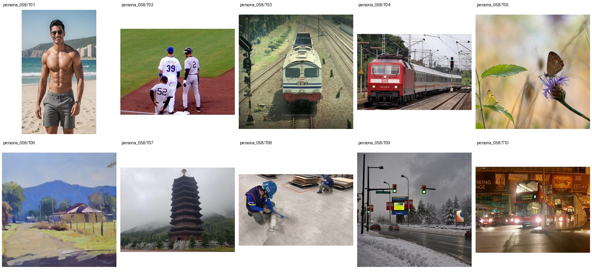

Intermodal freight planning manager for a regional rail-and-port logistics operator · Master's degree in Supply Chain Management · 未提供数值年龄；按职业与教育背景推定为成年人
Nozomi spends her workdays juggling rail schedules, container dwell-time dashboards, and tense calls with trucking partners when weather or staffing throws the network off. After work she decompresses with leg day, boxing highlights, MMA clips, and WWE SmackDown segments, while keeping a wary eye on Arsenal and Real Madrid match updates. On weekends she helps a friend refine branding for a tiny food stall and, surprisingly, keeps a meticulous notebook of vintage manhole-cover designs she photographs around the city.
Retouch 1 · Attribute Modification 4 · Remove 3 · Background 8 · Replace 1 · Move 1 · Add 2 · Restyle 1
上层v3表达个性化编辑请求，底层列出操作、个性化参数及具体解析。125项global均不绑定题材或具体图片，由请求选择；人物基本信息、非global知识和图片保持不变。历史版本仅存internal；长期日常历史尚未构建。
整组图片与基础人物信息（已清理、统一字段）

{
"source": {
"dataset": "bowen-upenn/PersonaMem-v3",
"revision": "7b00a090b35b7293e6efeeb19494207f32b5a9ee",
"source_persona_id": "109",
"path": "backend/109/profile.json",
"raw_sha256": "a91202743683be0c98d06167e68316f61a2626016740affa801b7c533d965dd9"
},
"basic_profile": {
"name": "Nozomi Utsunomiya",
"age": null,
"gender": "cisgender female, bisexual",
"nationality": null,
"languages": [],
"location": {
"city": null,
"region": null,
"country": null,
"description": null
},
"education": {
"degrees": [
"Master's degree in Supply Chain Management"
],
"fields": [],
"institutions": []
},
"occupation": {
"title": "Intermodal freight planning manager for a regional rail-and-port logistics operator",
"organization": null,
"industry": null,
"status": null
},
"relationship_status": null,
"summary": null,
"biography": "Nozomi spends her workdays juggling rail schedules, container dwell-time dashboards, and tense calls with trucking partners when weather or staffing throws the network off. After work she decompresses with leg day, boxing highlights, MMA clips, and WWE SmackDown segments, while keeping a wary eye on Arsenal and Real Madrid match updates. On weekends she helps a friend refine branding for a tiny food stall and, surprisingly, keeps a meticulous notebook of vintage manhole-cover designs she photographs around the city.",
"hobbies": [],
"personality": {
"traits": [],
"values": [],
"quirks": [],
"big_five": {
"openness": "low",
"conscientiousness": "medium",
"extraversion": "medium",
"agreeableness": "medium",
"neuroticism": "high"
}
},
"additional": {
"social_connections": [
{
"friend_id": "friend_1",
"display_name": "Naoko Uehara",
"relationship_depth": "close",
"shared_interests": [
"leg day",
"MMA clips",
"food-stall finds"
]
},
{
"friend_id": "friend_2",
"display_name": "Natsumi Uchida",
"relationship_depth": "close",
"shared_interests": [
"WWE SmackDown",
"funny fail videos",
"Arsenal"
]
},
{
"friend_id": "friend_3",
"display_name": "Naoya Umetsu",
"relationship_depth": "close",
"shared_interests": [
"rail schedules",
"container logistics",
"Real Madrid"
]
},
{
"friend_id": "friend_4",
"display_name": "Naoko Urabe",
"relationship_depth": "acquaintance",
"shared_interests": [
"local photo walks",
"found-object posts"
]
},
{
"friend_id": "friend_5",
"display_name": "Noboru Uno",
"relationship_depth": "acquaintance",
"shared_interests": [
"boxing highlights",
"MMA clips"
]
},
{
"friend_id": "friend_6",
"display_name": "Noriko Umeda",
"relationship_depth": "acquaintance",
"shared_interests": [
"small-business accounts",
"local community contacts"
]
},
{
"friend_id": "friend_7",
"display_name": "Nina Usui",
"relationship_depth": "acquaintance",
"shared_interests": [
"pop-culture watchers",
"dry couple-life skits"
]
},
{
"friend_id": "friend_8",
"display_name": "Noriaki Uesugi",
"relationship_depth": "distant",
"shared_interests": [
"trucking partners",
"port logistics"
]
},
{
"friend_id": "friend_9",
"display_name": "Nanami Ukita",
"relationship_depth": "distant",
"shared_interests": [
"former classmates",
"Instagram close friends"
]
},
{
"friend_id": "friend_10",
"display_name": "Naomi Urushibara",
"relationship_depth": "distant",
"shared_interests": [
"wrestling fans",
"sports mutuals"
]
}
]
}
},
"adult_eligibility": {
"status": "adult",
"basis": "adult_career_and_education_context",
"inferred": true,
"numeric_age_provided": false
},
"persona_id": "persona_058"
}